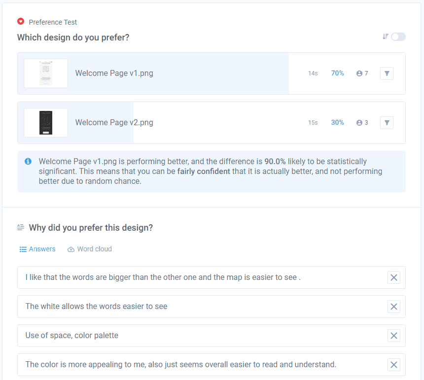

Schnitzeljagd is a scavenger hunt app that allows users to explore their surroundings with friends and family.
Initially, Schnitzeljagd was going to focus on Augmented Reality and hunting in groups to create a more engaging scavenger hunt experience for users.
Here is a problem statement / possible solution document:
I did many different forms of tests to see if my hypotheses were headed in the right direction. The first method was through some interviews with potential users. I got these key insights from the interviews:
You can look at the full interview notes here
The next test I did was card sorting to make sure the navigation would not confuse potential users. I had five participants sort the topics of the app into categories in an Open Card Sort. There were two main insights from this test:
You can look at the results of the card sorts and additional notes here
Here is a sample of the results:
With the navigation structure built out for Schnitzeljagd, I built a mid-fidelity prototype and conducted usability tests with 6 participants. You can find the script and notes on these tests here
I compiled the results of these tests in this Rainbow Affinity Map:
During these Usability Tests I found 5 main issues:
You can find the full Usability Test Plan here
The last test I have done so far is a preference test to see if users preferred a light or dark theme for the app. I found that participants preferred a lighter theme.
Here is a snapshot of the results and some of the answers that participants gave:
Before I could build any screens, I had to figure out exactly what the user would need to be able to do to fulfill their goals. I did this by doing a task analysis, task flow, then user flow diagrams for 3 key tasks for one of the personas Schnitzeljagd is designed for. These 3 tasks are: Find a Hunt, Invite Friends, and Go On a Hunt. You can find the full task analysis here
Here are the user flows that were created as a result of the task analyses:
I created user personas to better direct my efforts to making the app something that actual users were more likely to use and like. I created 3 unique personas based on research and interviews with potential users: Jackson, Anna, and Catherine. Here are the User Persona Documents detailing their characteristics and goals:
After ironing out the user flows and navigation of the app, I was finally able to create wireframes to start building out the features of the app. Here are the low fidelity wireframes of some of the main features of the app:
From here, I sketched some low-fidelity prototypes of said features, here is the Hunt Search prototype:
After that I made mid and then high-fidelity prototypes, which I used for Usability Testing. Here are some of the high-fidelity prototype screens:
Here are some screens of the app in its latest revision:
You can explore the clickable prototype for the Hunt Search flow here